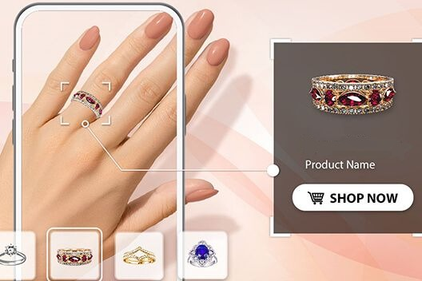

Problem Statement
Online apparel shopping has a persistent trust gap: customers can see the product, but they cannot easily imagine how it will look on their own body. Static product photos miss proportion, position, and visual context, which can reduce purchase confidence and increase returns.
Approach
The system treats try-on as a controlled computer vision pipeline. It detects the person, estimates body landmarks, isolates the garment, and aligns the garment with the user's torso while preserving as much texture and product detail as possible.
Instead of depending on a fully generative black-box output, the implementation emphasizes geometric consistency: body keypoints guide scale and rotation, while segmentation masks keep the rendered garment constrained to the intended region.
Solution

- Extracted body landmarks to estimate shoulder width, torso angle, and target placement.
- Segmented the clothing item from its background and cleaned the mask for compositing.
- Warped the garment image to match the user's pose and blended it over the original frame.
- Added post-processing to reduce hard mask edges and improve visual continuity.
Challenges
The hardest parts were occlusion, pose variation, and preserving garment texture after transformation. Loose clothing, crossed arms, and angled photos introduce ambiguity, so the system needed guardrails for bad keypoint detections and masks that were too noisy to trust.